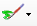
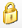
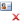
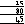
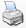
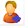

|
Toolbar
|
Previous Top Next |
 Team View. This icon will show all staff members for 1 day.
Team View. This icon will show all staff members for 1 day.
Week View. This icon will show an entire week’s worth of appointments for one
member of staff.
 Colour scheme. The diary can be rendered in a variety of colour schemes by selecting
this icon.
Ignore working hours. Allows staff to ignore what working hours are specified for a
member of staff. If ticked appointments can be created when the member of staff is not
shown as working.
Show’s cancelled appointments.
Show’s minutes within the calendar.
 Image overlays. If image
overlays are on, then appointments can have a variety of
different images shown in the bottom right of the appointment to indicate it’s state.
Image overlays. If image
overlays are on, then appointments can have a variety of
different images shown in the bottom right of the appointment to indicate it’s state.
Prints the current diary view to the default printer.
Allows users with the correct
rights to edit the treatments that are available within the
booking system.
Advanced Settings for the diary.
Swap user. Allows another member of staff to log on temporarily. Revert user. When the staff member has been swapped, the revert user will log the
previously active user onto the diary. New Appointments. If the diary is linked to a website where users can boobook
appointments, then the appointment requested by users can be viewed here.
New Appointments. If the diary is linked to a website where users can boobook
appointments, then the appointment requested by users can be viewed here.
Reports. Shows the available salon reports.